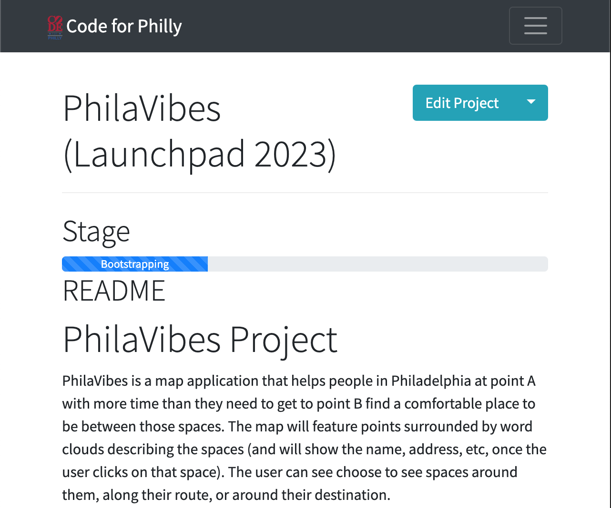

Last updated: Wed May 10 2023 | Permalink | RSS
PhilaVibes is a map application that helps people in Philadelphia at point A with more time than they need to get to point B find a comfortable place to be between those spaces. The map will feature points surrounded by word clouds describing the spaces (and will show the name, address, etc, once the user clicks on that space). The user can see choose to see spaces around them, along their route, or around their destination. Philavibes started as a Code for Philly Launchpad 2023 project.
Thank you for reading! Please consider supporting this blog.